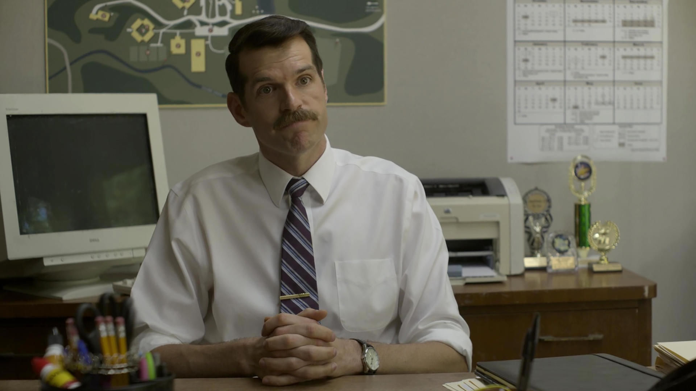

В поисках Аляски
«Знаешь, мне до сих пор кажется, что единственная возможность вырваться — это быстро и по прямой, но я пока все же предпочту походить по лабиринту. Тут отстойно, но это мой выбор.»
Главные герои

Майлз Холтер «Толстячок»
Главный герой романа, Майлз, — новичок в подготовительной школе Калвер-Крик, увлекающийся запоминанием последних слов известных людей. Его друг и сосед по комнате, Полковник, ласково называет Майлза Толстячком, несмотря на то, что тот высокий и худощавый. Майлз влюбляется в девушку по имени Аляска, пока ищет «Великое Возможно».
Аляска Янг
Подруга и возлюбленная Майлза, загадочна и притягательна. Она любит пить вино, собирать книги на гаражных распродажах и вместе с Полковником разыгрывать богатых студентов Калвер-Крика. Дикая и непредсказуемая, Аляска может в одно мгновение сменить настроение, ведь она до сих пор переживает смерть матери.

Чип Мартин «Полковник»
Сосед Майлза по комнате и его доверенное лицо. Полковник — волевой гений, который любит подшучивать над богатыми студентами Калвер-Крика.

Такуми Хикохито
Мастер фейерверков и розыгрышей. Тихий, но незаменимый член команды. Верный друг, который всегда поддержит в трудную минуту.
Лара Бутерская
Румынская студентка из Калвер-Крик, Лара — подруга и бывшая девушка Майлза.
Доктор Хайд
Старший преподаватель Майлза по предмету «Мировые религии», доктор Хайд увлечён преподаванием и ведёт занятия в своей бескомпромиссной манере. Он выступает духовным наставником для главных героев — Майлза Холтера и Аляски Янг.

Мистер Старнс «Орел»
Ученики Калвер-Крика прозвали мистера Старнса, старосту школы, Орлом. Он часто становится объектом розыгрышей и известен своей суровостью и тем, что на Аляске называют «мрачным взглядом».
«Как вы выберетесь из этого лабиринта страданий?»